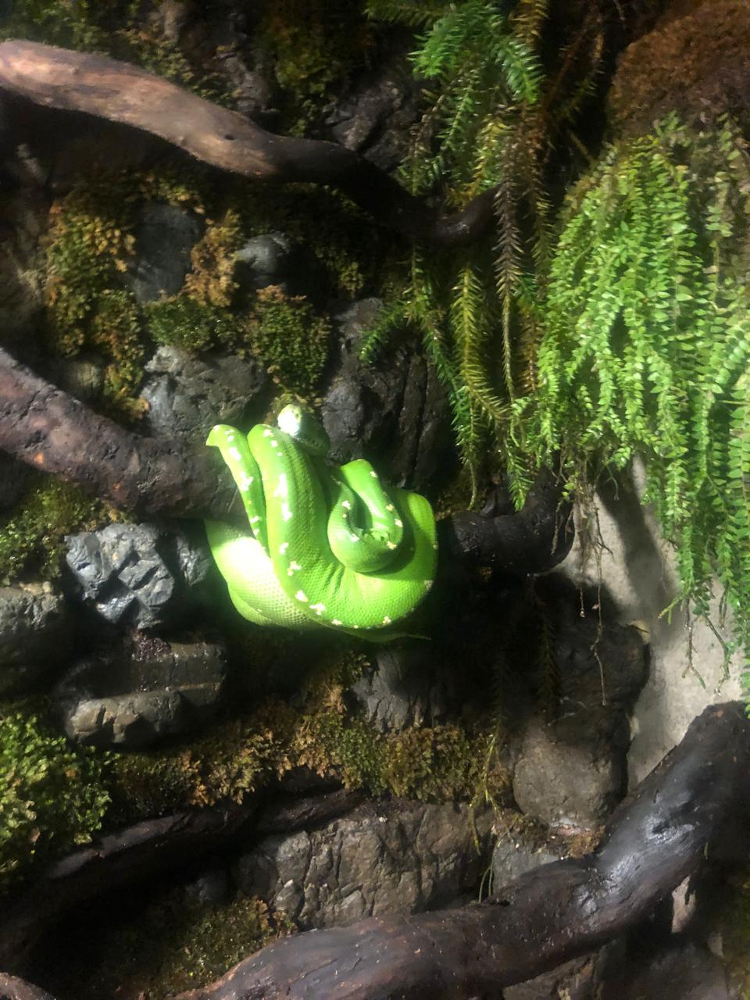
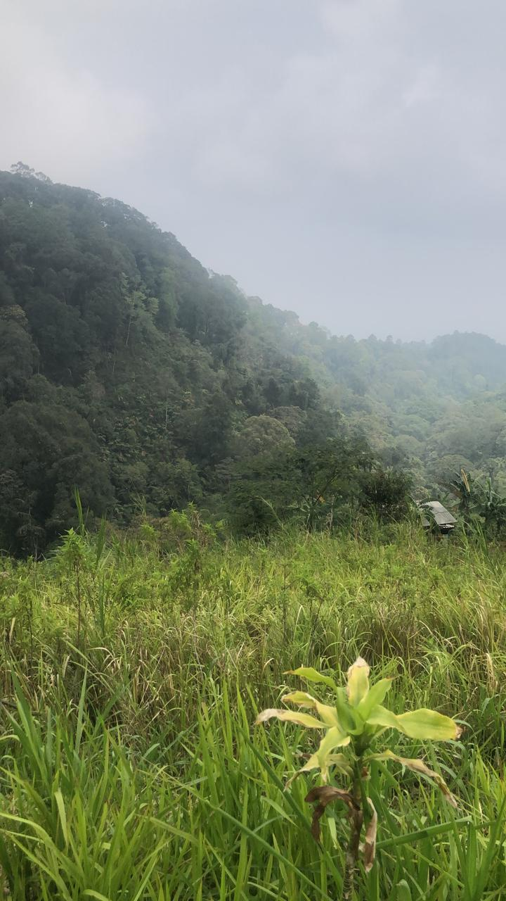

Jeanne Carolline's portfolio 
Welcome to Jeanne Carolline Website, i'll show my project and little things about me. but the little of universe.
Hobbies
Explore
Im so curious about many things, so it could be some weird things to explore. or i called it as unique
Gardening
I already have some Butterfly pea flowers, Mulberry tree, and Mango Tree

Adventure
Sometimes, i would like to do some travel, especially in a cold place like a mountain